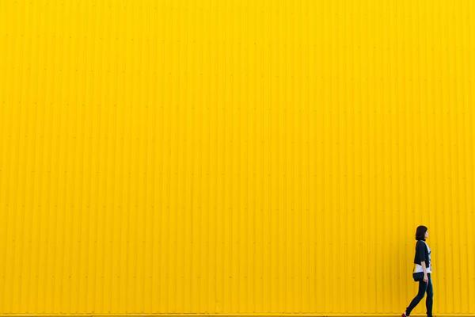

One Week Above 10,000 Feet NEW!

After Kilimanjaro I got a little obsessed with altitude — specifically, what it actually does to a body, day by day. So this summer I spent a full week camped high in the Sierra Nevada, around Kearsarge Pass at 11,760 feet, and kept notes on how I felt every single day. I'm not a doctor, just a backpacker who reads too much, but here's the diary.
Day 1 — the body doesn't know where it is yet
Up high there's roughly a third less oxygen pressure than at sea level, and on the first day your body basically panics quietly. My breathing sped up, my heart ran about 15–20 beats faster than normal just lying still, and that first night I slept terribly — waking up gasping in that weird stop-start breathing pattern you get up high. Totally normal, apparently, and totally unpleasant.
Days 2–3 — the rough patch
This is the window where mild altitude sickness shows up, and it got me a bit: a dull headache that wouldn't quite quit, no appetite, and feeling slightly hung over without the fun part first. The standard advice really does work — rest, hydrate relentlessly, don't climb higher to sleep. By the end of day three the headache lifted.

I brought a cheap pulse oximeter (the finger-clip kind) and watching my blood-oxygen sit around 91% instead of the high 90s was a strange little daily reminder that I was somewhere my body considered hostile. It creeps back up as you adjust.
What actually helps you adjust
Here's the stuff that made a real difference over the week:
| Strategy | Why it works |
|---|---|
| Climb high, sleep low | Daytime exposure up high, recover at lower camp |
| Ascend ≤ 1,000 ft/day (above 8,000) | Gives blood & breathing time to adapt |
| Hydrate (check urine color) | Altitude dries you out fast; pale = good |
| Easy first 48 hours | Don't push hard while still adjusting |
Days 5–7 — the strange calm
And then, around day five, the mountain just... stopped fighting me. I slept through the night. Food tasted good again. Colors and sounds felt sharper, and my head felt weirdly quiet and clear. A week isn't long enough to fully adapt the way people who live up there do, but it's long enough to cross over from suffering into something that feels almost like belonging.
Before you go
If you can, spend a night or two at a middling elevation before you go really high — a head start makes a huge difference. Bring a warmer sleeping bag than you think you need (high camps get brutally cold even in summer), drink more water than feels reasonable, and give yourself spare days so you're never tempted to push through feeling awful.
A week above 10,000 feet taught me more about my own body than any other trip. Treat the altitude with respect and it'll eventually hand you that strange high calm. Rush it and it will absolutely make you pay. Pole pole, as my Kilimanjaro guides would say. <3 Katie